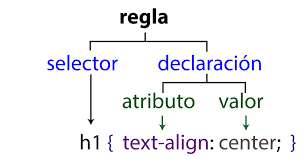

Es aprender a interactuar con el lenguaje HTML conociendo y manejando la sintaxis y los selectores para llegar a tener el
diseño de nuestra pagina web requerida
Sintaxis y Selectores CSS
La meta básica del lenguaje Cascading Stylesheet (CSS) es permitir al motor del navegador pintar elementos de la página con características específicas, como colores, posición o decoración.
La sintaxis CSS refleja estas metas y estos son los bloques básicos de construcción
Un selector CSS es la primera parte de una regla CSS. Es un patrón de elementos y otros términos que indican al navegador qué elementos HTML se seleccionan para aplicarles
una regla que incluye los valores de las propiedades CSS. El elemento o los elementos seleccionados por el selector se denominan sujeto del selector.

Interacción Humano Ordenador
La Interacción Humano Computadora es la rama de las Ciencias de la Computación que busca conectar a los humanos con los sistemas computacionales de forma natural e intuitiva.
Los humanos interactúan con la realidad a través de sus sentidos y la Realidad Virtual conecta a los humanos con los mundos virtuales.
Gracias a los avances tecnológicos de las últimas décadas, cientos de dispositivos e interfaces han surgido para intentar lograr esta conexión.